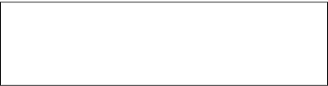

-
Chapter 6
Scales & Key Signatures
The major scale illustrated in Chapter 1
is just one way of dividing the octave; arrange the steps differently and the resulting scale will have a different character. Most classical and popular music is built on major and minor scales, but there are others, both traditional
and artificial, found in folk music and modern composed works.
From the autograph manuscript of Debussy’s, La Mer (1905)
“The tonal scale must be enriched by other scales.”
– Claude Debussy -
72
Section 1
The Natural Minor Scale
The major scale has a close relation in the natural minor Natural Minor The pattern of whole steps and half steps that results when playing the piano’s white keys, beginning on the note A:
W H W W H W W
The natural minor scale beginning on A uses the same notes as the C major scale, but the pattern of whole steps and half steps is changed. . The same white key
pattern used for the major scale produces the natural minor if you begin with
A instead of C: A B C D E F G A. Put another way, you can sing a natural minor
scale with the familiar solmization syllables by beginning with La instead of Do:
La, Ti, Do, Re, Mi, Fa, Sol, La. The natural minor scale can be expressed as the
following pattern of whole and half steps: W H W W H W W, as in the ladder
shown at right.Scale Degrees
Each of the seven notes of a major or minor scale has a name. These names will be convenient when describing scales and later will be used in harmony, too, so this is
a good moment to learn them.The first note of any scale is the tonic. Tonic The first note of a diatonic scale or a chord built on the first degree of the scale. In traditional harmony it provides the tonal center of a composition; melodies come to rest on the tonic, and the chord built on the tonic provides a sense of completion. Next in ascending order come the
supertonic Supertonic The name of the second scale degree or a chord built on it. , mediant Mediant The third scale degree or the chord built on it. , subdominant Subdominant The name of the fourth scale degree
or the chord built on it. It’s one of the three most important scale tones
along with the tonic and dominant. , dominant Dominant The fifth scale degree or a chord built on it. The dominant is one of the three most important scale tones along with the tonic and subdominant. , submediant Submediant The name of the sixth scale tone or the chord built on it. , and subtonic Subtonic The name of the seventh scale degree when it’s a whole step below the tonic, as it is in the natural minor scale. Otherwise, the seventh scale degree is called the leading tone. ,
or leading tone Leading Tone The seventh scale degree when it’s a half step below the tonic, as it is in the major, harmonic minor, or melodic minor scale. In the natural minor scale, the seventh degree is called the subtonic. (if a half step below tonic, see below).The three most important notes of the scale are the tonic, the dominant, and the subdominant, which for historical and acoustical reasons form something like foundation posts for the scale: the dominant is a fifth above the tonic; the
subdominant a fifth below. The mediant, the third degree of the scale, gets its name from being halfway between the tonic and the dominant; in a sense it mediates
between them. The submediant mediates between the tonic and the subdominant. Finally there’s the supertonic, just above the tonic, and the subtonic, just below it. When the subtonic is only a half step below the tonic, as it is in the major scale, it’s called the leading tone because it seems to lead back to the tonic.Movie 6.1 The major and minor scales
The natural minor scale follows the pattern of steps found on the piano’s white keys starting on A instead of C.
-
73
The logic behind the scale degree names is clear if you view a scale with its tonic in the center:
Relative Minor And Relative Major
Because the minor scale beginning on A uses the same notes as the major scale on C, we say that the A minor scale is the relative minor Relative Minor The minor scale that shares the
same key signature with a major scale. The relative minor of any major scale begins a major sixth above the tonic of the major scale. For example, c minor is the relative minor of E♭ major – both have a key signature of three flats. of C major, and C major is the relative major Relative Major The major scale that shares the
same key signature with a minor scale. The relative major of any minor scale begins a minor third above the tonic of the minor scale. For example, A major is the relative major of F♯ minor – both have a key signature of three sharps. of the A minor scale. In the C major scale A is La, the sixth or submediant degree, and similarly, every major scale, no matter what note it starts on, has a relative minor scale that begins with
its submediant and which shares the same set of pitches and uses the same sharps or flats. Since the submediant is either a major sixth above or a minor third below the tonic, you can also find the relative minor by counting down a minor third from the tonic
note of a major scale.Figure 6.1 Scale degrees
The A minor scale shown with its tonic in the center. When the seventh scale degree is a whole step below the tonic, as it is in the natural minor scale, it’s called the subtonic. When it’s a half step below the tonic, as in the major scale, it’s called the leading tone.
-
74
For example, to find the relative minor of a major scale beginning on F♯, you need to count downward from F♯ to D♯:
D sharp minor is the relative minor of
F sharp major. Conversely, you can find the relative major of a minor scale by counting up a minor third from the tonic.Parallel Minor And Major
The parallel minor Parallel Minor A scale with the same tonic, but a different key signature as its parallel major. The F minor scale, for example, is the parallel minor of F major – they share the same tonic, but the key signature for F minor has four flats and the key signature for F major has one flat. of a major scale is the minor scale beginning on the same tonic. Parallel major and minor scales
do not share the same number of flats or sharps since they begin on the same tonic but use a different pattern of whole steps and half steps. Again the example shows the “natural” form of the minor scale, which you can see uses several flats in this case. The natural minor is not necessarily made of naturals; it’s called that because
it uses only the unaltered tones of its relative major scale.Movie 6.2
Major scale and its relative minorThe relative minor scale begins on the submediant (sixth) degree of its relative major.
Movie 6.3 Parallel minor versus relative minor
The parallel minor of C major is C minor.
The relative major of C minor is E flat major. -
75
Review 6.1
1. The natural minor scale corresponds to the pattern of white keys beginning on A, making the pattern
W H W W H W W.2. The degrees of the scale are named, in ascending order, tonic, supertonic, mediant, subdominant, dominant, submediant, subtonic (when a whole step below the tonic) or leading tone (when a half step below the tonic).
3. The relative minor of a major scale starts on the major scale’s submediant (6th) degree. The relative minor uses the same notes as its relative major. The relative minor of D major is B minor, for instance. Both scales use the notes, D E F♯ G A B C♯ D, but have a different tonic.
4. The parallel minor and major scales share the same tonic, but do not use the same notes. The parallel major of D minor, for instance, is D major.
D minor is spelled: D E F G A B♭ C D.
(See above for D major).Suggested Practica Musica Activities 6.1
• Relative Keys: Provide the relative major or minor for
the given key.
-
76
Section 2
Key Signatures
When writing the notes of the E flat major and C minor scales for Movie 6.3 it was necessary to include several flats. E flat major and C minor don’t use E; they use E♭, and also the flat forms of
B and A. Rather than write the flats every time those notes appear, it’s customary to show them at the left of the page in a key signature Key Signature A grouping of flat or sharp symbols placed at the beginning of each staff to indicate the key of the piece. The key signature tells you which notes are to be flatted or sharped throughout. Flats and sharps are always added in the same order, so a key signature with three sharps, for instance, will always indicate F♯, C♯, and G♯. . The key signature of three flats tells the reader that any B, E, or A in the music is to
be played as a flat unless otherwise indicated. To a musician that signature would identify the piece as one that
uses either the E flat major scale or the C minor scale: the piece would have to be either in the key of E flat, or the key of C minor. The choice would depend on the nature of the music and its harmony. Figure 6.2 shows how our three scales from the preceding example look with their key signatures.
Figure 6.2 Using key signatures
Relative keys share the same key signature.
Parallel keys share the same tonic.Movie 6.4 A melody written with and without a key signature
Without the key signature, every instance of B♭, E♭ and A♭ needs a flat sign.
A key signature is printed at the beginning of each line and stays in effect until canceled by another one. Whenever you write a clef you should follow it by the key signature.
-
77
Traditional key signatures are composed either of flats or sharps, not both, and the flats and sharps are always added in the same order: the first flat is always B♭ and the first sharp is always F♯. Subsequent flats are each a fifth lower than the previous one and subsequent sharps are each a fifth higher than the previous one (the circle of fifths Circle of Fifths A visual representation of the relationship between all of the major and minor keys. It can help you determine the key signature for each major key and its relative minor.
At the top of the circle is C major with no flats or sharps. Moving clockwise, each tonic rises a fifth, and a sharp is added to the key signature. Going in the opposite direction from C, each tonic drops a fifth, and a flat is added to the signature. diagram shown in Figure 6.4 illustrates this principle). This helps you to quickly identify the pitches – if a key has only two sharps in its signature they will always be F♯ and C♯ – you don’t need to look at their placement in the staff.The flats or sharps are displayed in a standard arrangement to make them easier to recognize. Here are all fifteen signatures and their keys, as drawn in the treble and bass clefs.
• Building Key Signatures: Provide the correct number of flats or sharps for the given key.
• Choosing Key Signatures: Choose the appropriate key signature for each scale.Suggested Practica Musica Activities 6.2

Figure 6.3 Table of key signatures showing both major and minor keys
-
78
Figure 6.4 The Circle of Fifths
Moving clockwise from C, as each tonic rises a
fifth another sharp is added to the key signature. Going in the other direction from C, a flat is added to the key signature each time the tonic drops a fifth. This simple but elegant principle is traditionally represented in the circle of fifths shown at right.
The circular design helps to show how the two series begin to overlap with their enharmonic equivalents after reaching five sharps or flats, but the same information can as easily be represented by the table of flat keys and sharp keys below. Lower-case letters are used to refer to the minor keys. -
79
Identifying Keys From The Signature
Usually students just memorize the signatures: one sharp means G major or E minor; two means D major or B minor, etc. But there is a shortcut to identifying a key from its signature.
Notice that the last sharp in a key signature is always the leading tone (seventh degree) of the major scale for that key. In Figure 6.5, the last sharp in the signature is D♯, which tells us that D♯ is the leading tone of the major
key using this signature. The major key tonic is a half step higher: E. This signature must be for E major or its relative minor, C minor.In flat signatures, the last flat is the fourth degree of the corresponding major scale. In Figure 6.5, the last flat is D♭, so the major scale using this signature is four scale steps downward: A♭. The piece must be either in A♭ major or its relative minor, F (or: since the flats are a fourth apart,
if there’s more than one flat, the next-to-last is the tonic).
Of course, both of these methods require that you know whether the piece is major or minor!For now you can generally just check the last note of a melody, which is usually the tonic: a piece with a two-sharp key signature that ends on B is probably in B minor rather than D major. Once you learn chords there will be no doubt of the key, but that comes later.
• Tonics: Identify the tonic scale degree from the key signature.

Suggested Practica Musica Activities 6.3
Figure 6.5 Identifying a key from its key signature
The last sharp of a key signature is a half step below
the major key tonic. The last flat is a fourth above the
major key tonic. (Since the last flat is a fourth above
the previous flat, you can also look at the second to
last flat to get the tonic.) -
80
Accidentals in the Context of a Key
If you see an accidental — a written sharp, flat, natural, double sharp, or double flat not in the key signature — it means that the changed note is not part of the prevailing major scale or natural minor scale, since
the key signature supplies all the scale notes for major and natural minor. Accidentals apply only to the pitch they precede — not to other octaves of the same pitch class — and they last until the end of the measure.
If the altered note is used again in the next measure then a new accidental must be written.Precautionary Accidentals
Since accidentals last only until the next measure line, you have to write them again if you want to repeat the same accidental in the next measure. Nonetheless, composers often remind the reader by using a precautionary accidental, as in Movie 6.6.
In this example, the A in the first measure would
have reverted to A♭ anyway after the bar line, but
a precautionary flat reduces the chance of error.Movie 6.5 Using accidentals with a key signature
Notice that both B's are flatted in the second measure but only the first
B requires a flat sign. The two C’s, however, are not in the same octave and
so the natural sign at the beginning of the measure does not apply to the
C an octave lower, though a cautious writer might use a precautionary
sharp on it (see below).Movie 6.6 Precautionary accidentals
The natural sign is no longer in effect after the bar line.
The precautionary accidental is simply a helpful reminder.Suggested Practica Musica Activities 6.4
• Reading in Keys: Practice reading pitches in the
context of key signatures. -
81
Review 6.2
1. A key signature is a collection of flats or sharps
that will be used throughout the piece unless changed briefly by an accidental or replaced by another key signature. It doesn’t tell if the piece
is major or minor, but it reduces the possible keys
to one major key and its relative minor.2. You can identify the key of a piece by this trick:
the last sharp in a sharp key signature is the leading tone of the major scale that uses that signature.
In a flat key signature the last flat is the fourth note of the major scale using that signature (or, if there are two or more flats in the signature, the penultimate flat is the tonic note).3. The circle of fifths is a visual representation of the relationship between all of the major and minor keys. Starting at C, when the tonic rises a fifth a sharp is added to the key signature. Going the other way from C, when the tonic drops a fifth a flat is added to the signature.
4. A natural, sharp, flat, double-sharp or double-flat sign in a measure is an accidental that marks a note that is not part of the prevailing major scale or natural minor scale defined by the key signature (unless it’s merely undoing an earlier accidental in the same measure). Accidentals remain in effect
only until the next bar line.5. A precautionary accidental is an accidental that
isn’t necessary except as a reminder to the reader
that a previous accidental is no longer in effect. -
82
Section 3
Alternate Forms of the Minor Scale
One common reason for using an accidental is to make use of an alternate form of the minor scale. The natural minor, as we have seen, uses only the notes designated by the key signature, but there are other minor scales.
The Harmonic Minor Scale
Composers often want to raise the seventh note of a minor scale to make it lead back to the tonic – in other words, they want to give it a leading tone such as the major scale has:
a seventh tone that is only one half step away from the tonic.
To accomplish this, the seventh degree of the natural minor must be raised with an accidental of some sort, forming what we call the harmonic minor Harmonic Minor A scale that follows the same pattern as the natural minor scale except that it has a raised seventh degree to provide a leading tone back to the tonic. The raising is always accomplished by use of accidentals; it is not indicated in the key signature.
The addition of the leading tone creates the distinctive sounding augmented second interval between the sixth and seventh scale degrees. The melodic minor scale eliminates the augmented interval by raising both the sixth and seventh scale notes. (when we get to chords you’ll see why it’s called that). For example, to form the harmonic minor scale in the key of G minor (Movie 6.7), the seventh degree is raised a half step by adding a sharp. A harmonic minor scale shares the same leading tone as its parallel
major; in this case, the leading tone F♯ is common to
both G harmonic minor and G major.The harmonic form of the minor requires no changes in the
key signature. The seventh degree is always raised by writing a sharp or natural as an accidental. Note also that when we alter
a scale tone we never change its letter name. F becomes F♯,
not G♭.Movie 6.7 Natural and harmonic minors for key of G minor
Raising the seventh degree of the natural minor scale forms the harmonic minor scale.
-
83
The Melodic Minor
Now that you can identify intervals you’ll be able to see that the harmonic minor scale has an unusual feature. What would you call the interval between its sixth and seventh degrees shown
in Movie 6.8?This interval, the augmented second, was long regarded as awkward or at least exotic. When composers wanted to avoid the augmented second but still intended to use the raised seventh degree they raised the sixth degree as well, making the interval between the two an ordinary major second. Because the goal of this alteration was to produce smoother melody we call this form of minor the melodic minor Melodic Minor An alternate form of the natural
minor scale. The ascending melodic minor scale is the same as the harmonic minor except that the sixth degree is also raised, to eliminate the augmented second found between
the sixth and seventh degrees of the harmonic minor. The ascending pattern of whole steps and half steps is:
W H W W W W H
The melodic minor is represented
as reverting to natural minor when descending, though in practice, the three forms of minor are freely mixed together. (Movie 6.9).Notice that we raised the sixth degree by using a natural sign on what would otherwise have been an E♭. In other scales it might be necessary to use a sharp to get the same result, as in the melodic form of the A minor scale (Figure 6.6).

Movie 6.8 Mystery interval
An augmented second is created by raising the 7th degree of the natural minor scale.
Movie 6.9 Ascending melodic minor for the key of G minor
The sixth and seventh scale degrees are raised to form the ascending melodic minor scale.
Figure 6.6 The melodic form of the
A minor scale is spelled with a
sharp sign. -
84
The melodic minor is said to have two forms — one for going up and one for coming down as shown at right.
In practice there is usually no real need to define the melodic minor as having different forms for ascent and descent, because all three forms of the minor can be mixed in a single piece. The “descending melodic minor” is really just the natural minor again.
On the other hand, the textbook definition of melodic minor gives us a handy way to describe tunes such as the Scottish folk song "Charlie Is My Darling,” whose character depends on its use of raised sixth and seventh degrees that revert to their natural form when the movement is downward.
Movie 6.10 The melodic minor ascending and descending
The descending melodic minor is the same as the natural minor scale form.
Movie 6.11 A traditional tune that uses the melodic A minor scale
Raised scale notes are circled in red; lowered scale notes are circled in blue.
-
85
Review 6.3
1. The natural minor scale uses only the notes from
its key signature. The harmonic and melodic minor forms use accidentals to alter the character of the scale.2. The harmonic minor scale is the same as the natural minor except that the seventh degree is raised one half step to provide a leading tone back to the tonic. The raising is always accomplished by use of accidentals; it is not indicated in the key signature.
3. The ascending melodic minor scale is the same as
the harmonic minor except that the sixth degree is also raised, to eliminate the augmented second
found between the sixth and seventh degrees of the harmonic minor. The melodic minor is represented as reverting to natural minor when descending, though in practice the three forms of minor are
freely mixed together.The Natural Minor and its Alternate Forms
D natural minor
D harmonic minor
D melodic minor
-
86
Section 4
Beyond the Major and Minor Scales
There are a number of other ways to divide the octave, some coming from folk traditions or ancient practice, and some from
modern ingenuity. Each has a distinctive quality. These include the pentatonic scales, the blues scale, the whole-tone, octatonic and chromatic scales, and the Church modes.The Pentatonic Scale
The pentatonic Pentatonic A five note scale that follows the pattern of the piano’s black keys:
W W m3 W m3
It’s like a major scale without
the fourth and seventh degrees.
The pentatonic also comes in minor forms, such as:
m3 W W m3 W (five-tone) scale is found in folk music around the world as well as in composed music. Almost anything you
play in the pentatonic scale sounds melodious because there’s no way to make a dissonant leap: it contains no augmented fourth or diminished fifth. The typical major pentatonic scale is built in this pattern: whole step, whole step, minor third, whole step, minor third – just like the black keys of the piano, or like a major scale without the fourth and seventh degrees. If you play a melody using only black keys you are playing in a pentatonic scale.Movie 6.12 Debussy, “La fille aux cheveux de lin,” Préludes, Book I
This pentatonic melody is played almost entirely on the piano’s black keys.
-
87
“Amazing Grace” is a good example of a major pentatonic melody: its only pitches are F, G, A, C and D.
“Come All You Fair and Tender Maidens” is a different sort of pentatonic melody. Though it uses the same five notes as
“Amazing Grace” it gives a minor effect by emphasizing the D and the minor third above it:Movie 6.13 A major pentatonic melody
“Amazing Grace” uses just five scale tones: F,G, A, C and D
Movie 6.14 A minor pentatonic melody
-
88
Movie 6.15 shows the major pentatonic, as found in
“Amazing Grace,” the minor, as found in “Come All You Fair
and Tender Maidens,” and an alternate form of the
minor pentatonic.The Whole-Tone Scale
As the name suggests, the whole-tone scale Whole-Tone Scale A scale composed entirely of whole steps. It has only six notes and does not have a clear tonic. is composed entirely of whole steps. A non-traditional scale, it has no dominant, subdominant, or leading tone. Therefore you can’t make any of its notes sound like a “tonic,” and that gives whole-tone music a sense of being adrift without
a compass.Movie 6.15 Several forms of the pentatonic scale
Movie 6.16 Whole-tones from C

Movie 6.17 Whole-tones in the opening of Debussy’s “Voiles,” Préludes, Book I
“Voiles” translates as either "veils" or "sails" — either translation fits the mood of the piece.The whole-tone scale figures prominently in the music of the Impressionist composer Debussy.
In the passage at left he composed descending whole-tones in parallel thirds and fourths. -
89
Movie 6.18 The octatonic scale
Eight tones follow a pattern of alternating whole steps and half steps.
Movie 6.19
Octatonic scale in Bartok's Microkosmos Book 4, No. 101The opening measures are built on alternating whole steps and half steps starting on E♭ (E♭, F, G♭, A♭, A, B, C, D).
Movie 6.20 The blues scale
Ambiguity between major and minor characterizes the blues scale.
The Blues Scale
The blues scale Blues Scale A scale similar to the major scale
but with ambiguous third and seventh degrees, which tend to be minor
in a melody, but major in the accompaniment. A blues melody often slides between the minor and major forms of the third and seventh degrees. is sometimes represented as having two forms of the 3rd and 7th degrees: both major and minor. Sometimes you’ll
see other variable degrees too, like the 4th/sharp 4th, but what
really gives blues music its character is that the harmony is based
on the major scale and the melody’s variable degrees clash with the harmony. Typical blues will sound the primary major chords under melody that accents minor notes, or notes bending between minor and major. That makes the blues scale hard to depict in a way that communicates its real character, but this is close (Movie 6.20).The Octatonic Scale
This non-traditional eight-tone (octatonic Octatonic An eight-tone nontraditional scale formed from alternating whole and half steps. ) scale consists of alternating whole and half steps, and produces an effect that recalls
a traditional minor, except that it lacks the tonic-dominant relationship – it contains no pitch that would be a perfect fifth above
the tonic. -
90
Church Modes
The major and minor scales are the survivors of a number of scales or modes Modes Scale forms that date from medieval times. The modes, or, church modes, as they are often referred to, are essentially diatonic scales. The six modes are: Dorian, Phrygian, Lydian, and Mixolydian, Ionian, and Aeolian. that date from medieval times. The modes are still occasionally heard today, especially in folk music and jazz. You can get something of an idea of the flavor of the modes if you play
just the white keys using D, E, F, or G as a tonic. The mode starting on D is known as the Dorian mode; E is the tonic for the Phrygian; F for the Lydian, and G for the Mixolydian. The major and natural minor scales are sometimes called the Ionian and
the Aeolian modes.Just using the notes of one of these scales does not make a tune really modal. If you want to write a modal melody yourself it is important to cadence to its tonic – just as you need to do when distinguishing B minor from D major. You can emphasize the tonic
and dominant degrees by thinking of them as melodic destinations or stopping points. Phrases or sections will usually end on either the dominant or the tonic.Movie 6.21 The church modes
The Ionian and the Aeolian modes not shown here correspond to the major and natural minor scales.
-
91
The Dorian mode is probably the most familiar to our ears. The only difference between Dorian and natural minor is the sixth degree, which is a half step higher in Dorian.
Transposing The Church Modes
The pattern of steps of each of these can be transposed to any starting note, in which case it is convenient to use a key signature.
For example, Dorian transposed to begin on F would use a key signature of three flats. Think this way: Dorian in its original position starts on D but uses the key signature of the C major scale, which is a major second lower. So when transposed to F it would use the key signature of the major scale a major second lower from F: E♭. In the same way, Phrygian uses the key signature of the major scale located a major third below its tonic; Lydian, a perfect fourth below; Mixolydian, a perfect fifth below.Movie 6.22 A Dorian melody
The asterisk marks the occurrence of that sixth degree in this well-known traditional song.
-
92
Chromatic vs. Diatonic Scales
If you write a scale that is all half steps you’ll find that you need to include some chromatic half steps – half steps in which the letter name does not change, such as F to F♯. That’s why a scale made of all half steps is often called the chromatic scale Chromatic Scale A scale composed entirely
of half steps. It gets its name from the fact that it contains both chromatic and diatonic half steps.
A chromatic half step is one in which both notes have the same letter name, such as
C to C♯. A diatonic half step is one in which the letter name changes, such as
E to F or G♯ to A. (another name is the twelve-tone scale). Diatonic scales use only whole tones and diatonic half steps in which the letter name changes, such as E to F or G♯ to A (for more explanation of these terms see the glossary entry for generaGeneraIn ancient Greek music theory, the three types of four-note scale patterns (tetrachords) built within the space of a fourth. The diatonic genus broke the fourth up into two whole steps (tones) and a half step. A more unusual division was the chromatic, which consisted of two half steps of different size and a minor third. The last and most exotic was the enharmonic: a major third, a half step, and a tiny interval (smaller than a half step), called a diesis.
All these words continue to have meanings based on their original significance to the Greeks. Diatonic music is based on major or minor scales or the church modes; all of which are called diatonic because they resemble the diatonic genus above – they employ whole tones and that type of half step in which the note name changes. Chromatic music involves at least some half steps in which the note name remains the same, as in the chromatic genus. Similarly, the word enharmonic still refers to the relationship between two notes that are written differently and would in theory be separated by a diesis, and yet are played on the same key of the piano, such as E♯ and F. ). The spelling of the half steps in a chromatic scale is variable, except that B-C and E-F are almost always spelled diatonically. The arrangement below is one possibility.Movie 6.23 A chromatic scale
The chromatic scale includes diatonic and chromatic half steps.
Suggested Practica Musica Activities 6.5
• Spelling Scales: Test your knowledge of the basic major and minor scales.
• Scale Ear Training: Identify which type of scale has been played.
-
93
Review 6.4
1. The pentatonic scale is used extensively in folk
music all over the world. It has five notes, which in the major pentatonic are arranged like the black
keys of a piano: whole step, whole step, minor third, whole step, minor third. It’s like a major scale without the fourth and seventh degrees. The pentatonic also comes in minor forms, such as: minor third, whole step, whole step, minor third, whole step.2. The whole-tone scale is composed entirely of whole
steps. It has only six notes and does not have a clear tonic.3. The octatonic scale is an eight-tone nontraditional scale formed from alternating whole and half steps.
4. The blues scale is like the major scale, but with ambiguous third and seventh degrees that tend
to be minor in melody but clash with major accompaniment. A blues melody often slides between the minor and major forms of the
third and seventh.5. The church modes are predecessors of our modern major and minor scales. The pattern of steps for each mode can be found in the white keys of the piano: the mode beginning on D is the Dorian,
E is the tonic for the Phrygian, F for the Lydian,
and G for the Mixolydian. Our major and natural minor scales are sometimes called the Ionian and Aeolian modes.6. The chromatic scale is composed of half steps.
It gets its name from the fact that it contains both chromatic and diatonic half steps. A chromatic half step is one in which both notes have the same letter name, such as C to C♯. A diatonic half step is one
in which the letter name changes, such as E to F or
G♯ to A. The major and minor scales and the
modes are called diatonic scales for this reason:
they include only diatonic half steps.